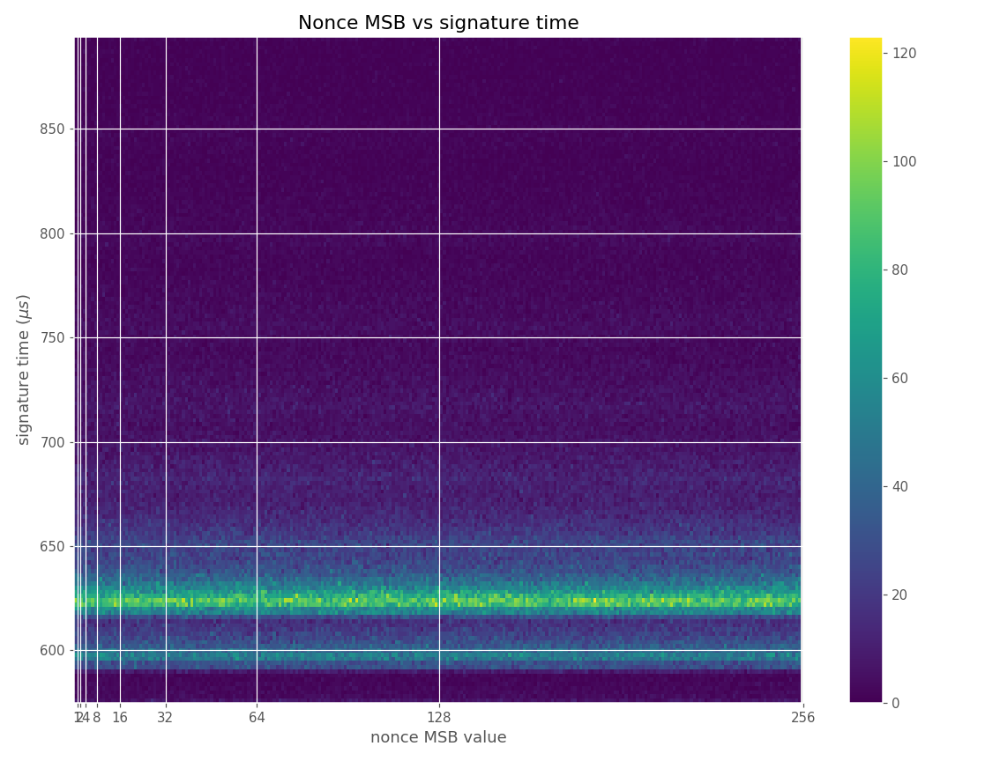
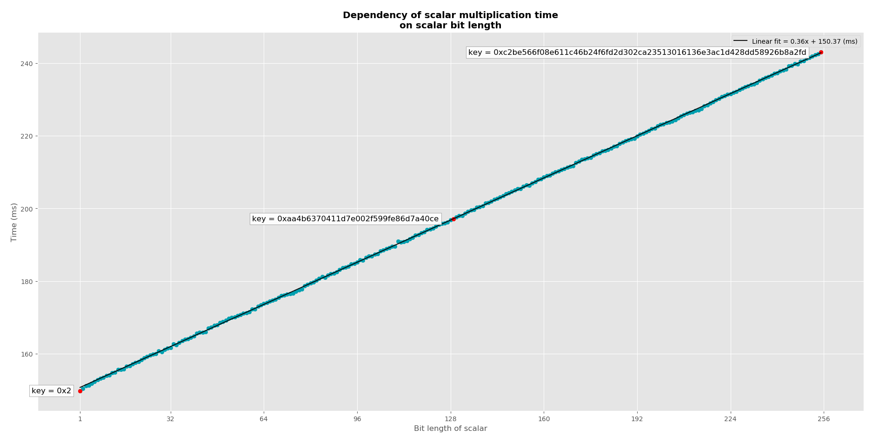
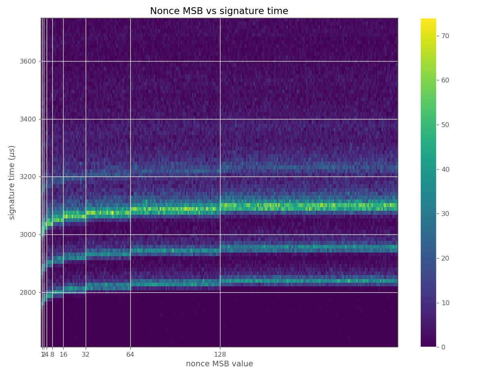
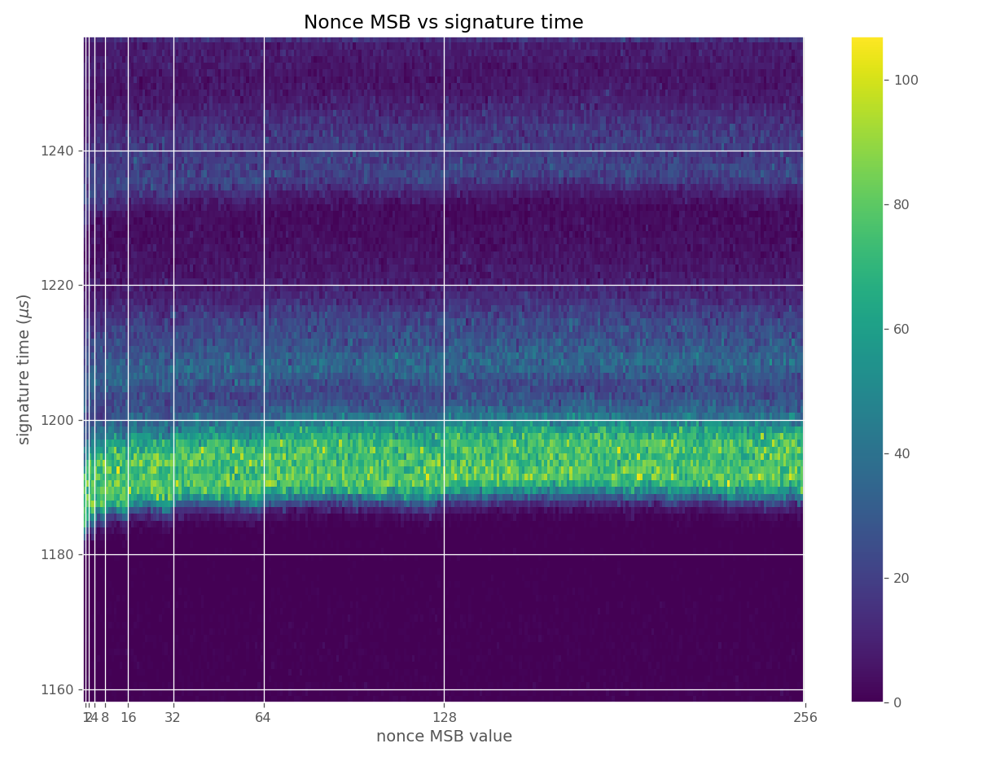
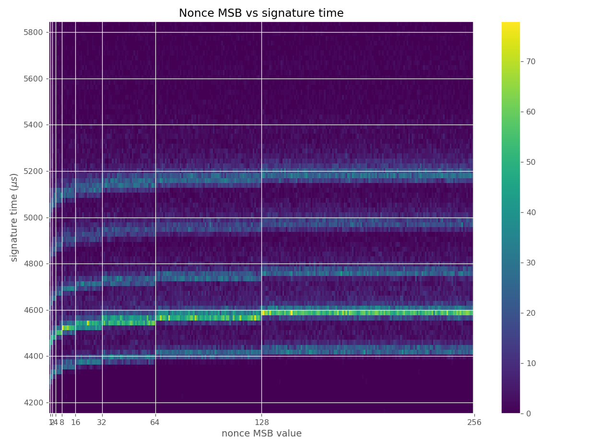
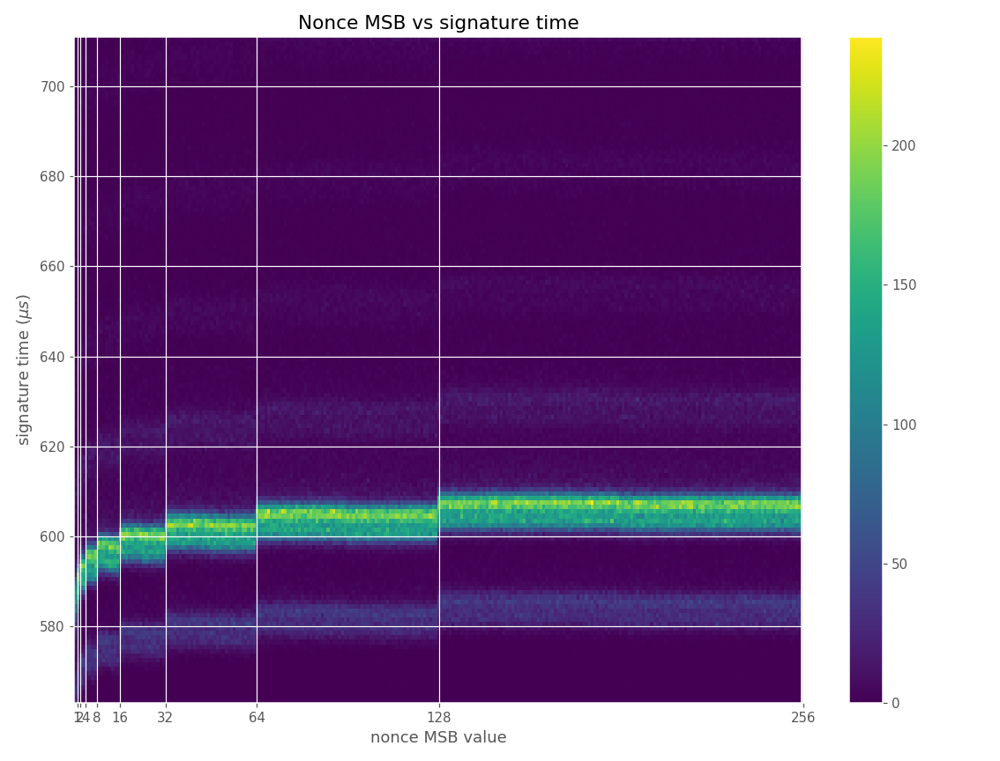
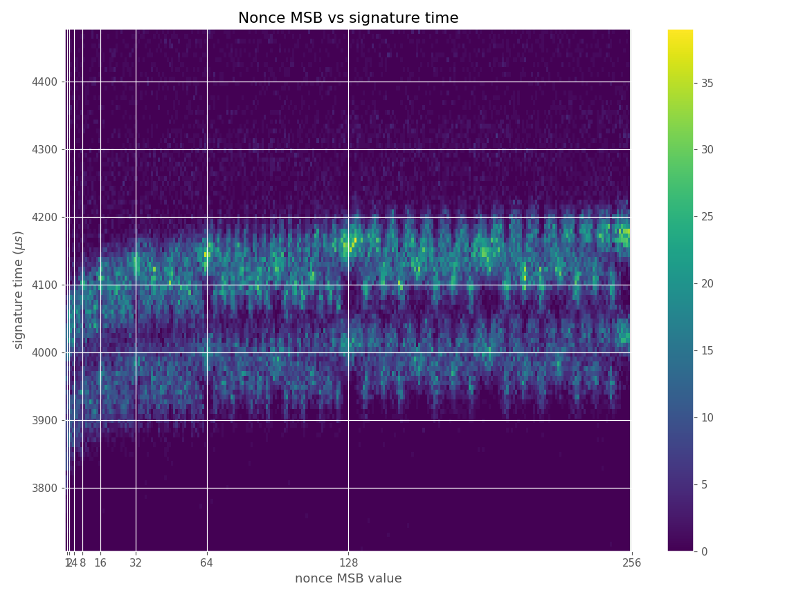
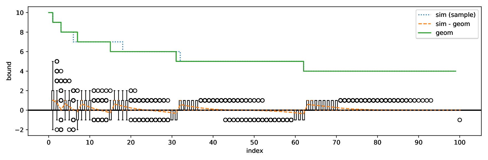

This page describes our discovery of a group of side-channel vulnerabilities in implementations of ECDSA in programmable smart cards and cryptographic software libraries. Our attack allows for practical recovery of the long-term private key. We have found implementations which leak the bit-length of the scalar during scalar multiplication on an elliptic curve. This leakage might seem minuscule as the bit-length presents a very small amount of information present in the scalar. However, in the case of ECDSA signature generation, the leaked bit-length of the random nonce is enough for full recovery of the private key used after observing a few hundreds to a few thousands of signatures on known messages, due to the application of lattice techniques.
We have verified our attack against an Athena IDProtect card, running on an Inside Secure AT90SC chip, for more affected devices see the next section. The attack required 2100 signatures to recover the private key on the standard secp256r1 curve, using an off-the-shelf smart card reader, running on an ordinary Linux laptop with a runtime of a few minutes after the collection of signatures. The total time for the attack, including the collection of signatures was around 30 minutes.
We propose two new methods to recover the full private key requiring just 500 signatures for simulated leakage data, 1200 for real cryptographic library data, and 2100 for smartcard data. Our attack and proof-of-concept code is inspired by the method of Brumley & Tuveri [3], for more details, see the section on the attack.
The paper, containing our improvements and systematic analysis of lattice attacks on ECDSA will appear in CHES 2020. See below for a pre-print version.
Primary contact: Jan Jancar ENABLE@JAVASCRIPT
Update Added a list of libraries and cards tested and deemed not vulnerable.
Update This page originally claimed an attack also applicable to EdDSA, due to the leakage also being present in the EdDSA implementation in libgcrypt. However, an attack path for EdDSA is not clear, as the leakage does not represent the bit-length of the random nonce modulo the curve order, but a full SHA-512 bit hash. Without the implementation reducing this modulo the curve order (which is not required by the protocol), the leakage does not seem to be exploitable. We have thus removed EdDSA mentions from this page.
Affected devices and libraries
We have tested our attack on an Athena IDProtect card with CPLC data 010b.0352.0005.
We further believe the following devices and cryptographic libraries to be affected:
Devices
-
Athena IDProtect with card CPLC data:
leakage plots CVE-2019-15809
010b.0352.0005: FIPS 140-2 certificate 1711, CC certificate ANSSI-CC-2012/23 (tested)010e.1245.0002: FIPS 140-2 certificate 17490106.0130.0401: FIPS 140-2 certificate 1750010e.1245.0002: FIPS 140-2 certificate 1764
Likely affected devices
- Valid S/A IDflex V with card CPLC data:
010b.0352.0005: FIPS 140-2 certificate 1781 (assumed, not tested)
- SafeNet eToken 4300 with card CPLC data:
010e.1245.0002: FIPS 140-2 certificate 1800 (assumed, not tested)
- TecSec Armored Card with card CPLC data:
Libraries
- libgcrypt:
leakage
plots CVE-2019-13627 source fix
- ECDSA: all versions including 1.8.4, introduced in 1.3.0, fixed in 1.8.5
EdDSA: all versions including 1.8.4, introduced in 1.6.0, fixed in 1.8.5
Update: The EdDSA scalar multiplication code in libgcrypt was leaking, however due to the way it was used, it was likely not exploitable. It did not reduce the scalar which was a SHA512 digest by the curve order, but used the digest directly, thus the leakage did not represent the bit-length of the reduced scalar. Thanks to Daniel J. Bernstein for the note.
- wolfSSL/wolfCrypt:
leakage plots CVE-2019-13628 source fix
- ECDSA: all versions including 4.0.0, fixed in 4.1.0
The leakage in wolfSSL/wolfCrypt is minuscule and would be very hard to exploit.
- ECDSA: all versions including 4.0.0, fixed in 4.1.0
- MatrixSSL:
leakage plots CVE-2019-13629 source no fix
- ECDSA: all versions including 4.2.1
- SunEC/OpenJDK/Oracle JDK:
leakage
plots CVE-2019-2894 source no fix our patch
- ECDSA over binary field curves: all versions including JDK 12, introduced in JDK 7
- ECDSA over binary field curves: all versions including JDK 12, introduced in JDK 7
- Crypto++:
leakage
plots CVE-2019-14318 fix
- ECDSA over binary field curves: all versions including 8.2.0
- ECDSA over prime field curves: all versions including 8.2.0, significantly smaller leakage.
- ECDSA over binary field curves: all versions including 8.2.0
Other software
- jsrsasign: source fix 2015 stars, 7406 uses
- elliptic: source 875 stars, 2 670 640 uses
- python-ecdsa: source 497 stars
- easy-ecc: source 122 stars
- fastecdsa: source 100 stars
- ruby_ecdsa: source 78 stars
We believe all of the cards above are affected because they share a common ECDSA component (FIPS
module
214)
, which is described as Athena OS755 ECDSA2 Component on
Inside Secure AT90SC A1.0 (Firmware). We have tested the vulnerability only on the Athena IDProtect card with CPLC data
010b.0352.0005 and ATR
3bd518ff8191fe1fc38073c8211309.
We believe that the source of the vulnerability of the aforementioned cards utilizing the Athena ECDSA component is the Atmel Toolbox 00.03.11.05 with the Common Criteria certificate DCSSI-CC-2009/11 (security target, certification report, info page). The security target states the following under security functions (on pages 48 and 49):
- M10.6 the TSF shall provide digital signature confirming to EC-DSA standard.
- Secure digital signature generate
- Secure digital signature verify
- Fast digital signature generate (see note*)
- Fast digital signature verify (see note*)
- M10.7 the TSF shall provide point multiplication on an elliptical curve, conforming to EC-DSA standard.
- Secure multiply
- Fast multiply (see note*)
* The Fast functions of M10.3, M10.4, M10.5, M10.7, M10.8, M10.9, do not
offer any DPA/SPA protection and must not be used for secure data.
We assume that the vulnerable Athena cards used the fast and insecure functions. Our hypothesis was confirmed to us after discussions with the vendor, see more in the responsible disclosure section.
Tested implementations deemed secure
Most implementations we analyzed during this research did not show any leakage and are thus likely secure. We cannot be sure of this, as our tests might not be exhaustive due to the complexity of the implementations.
The libraries usually have multiple scalar multiplication algorithms and choose from them based on build options, runtime configuration, curve used, cryptosystem used and operation being performed. Thus, our testing might just not have caught a particular configuration that could still be vulnerable. Below, we list libraries we tested and found not vulnerable:
Libraries
- OpenSSL 1.1.1d
- BouncyCastle 1.58
- BoringSSL 974f4dddf
- libtomcrypt 1.18.2
- Botan 2.11.0
- Microsoft CNG
- mbedTLS 2.16.0
- Intel IPP-Crypto
- IAIK ECCelerate 6.0.1
Cards
- ACS ACOSJ 40K
- Feitian A22CR
- G&D SmartCafe 6.0
- G&D SmartCafe 7.0
- Infineon CJTOP 80K INF SLJ 52GLA080AL M8.4
- Infineon SLE78 Universal JCard
- NXP JCOP31 v2.4.1
- NXP JCOP CJ2A081
- NXP JCOP v2.4.2 R2
- NXP JCOP v2.4.2 R3
- TaiSYS SIMoME VAULT
Devices
- YubiKey HSM 2 v2.102*
* Thanks to John Hughes for testing.
See the ECTester documentation for more information about tested libraries.
Questions & Answers
- Is my device affected?
See the section on affected devices, also if you have access to an unlocked JavaCard, you can test its vulnerability using our proof-of-concept and other testing tools. If you found a device or a library that is affected but is not present in the list above, please contact us.
- Is my library affected?
See the section on affected devices, if it is not there and it is supported by the ECTester tool then it is probably not affected, as we tested it (list of supported libraries). If it is not supported, we did not check. Furthermore, even if it is listed and we have tested it, it still may be vulnerable as cryptographic libraries often contain more than one scalar multiplication algorithm implementation, which can be enabled either by build options or sometimes even at runtime, where different algorithms are used for different classes of curves. We have usually tested the libraries in only one configuration and on a few curves (secp256r1, sect233r1...). - Are other devices running on the AT90SC chip affected?
The AT90SC chip was sold along with the Atmel Toolbox, a cryptographic toolbox utilizing the functionality of the Ad-X cryptographic coprocessor to provide some higher/level cryptographic functionality, such as ECDSA or RSA. This toolbox evolved, as the underlying intellectual property was sold from Atmel to Inside Secure (now called Verimatrix) and finally to WiseKey. The vulnerability is known to be present in one concrete version of the toolbox, the Atmel Toolbox 00.03.11.05 on the AT90SC Family of Devices, as specified in the Common Criteria security target of the toolbox. This version of the toolbox contains two versions of ECDSA functionality, secure and fast, the device using the toolbox is affected if it uses the fast version of the primitive, as the above-specified cards do. We do not know if other versions of this toolbox, and the renamed INSIDE Toolbox or WiseKey Toolbox contain the insecure functionality or if they are vulnerable. - Why did the Atmel Toolbox contain explicitly insecure functionality?
We have no idea. Having functions that perform signing or encryption, but are explicitly marked as insecure is possibly faster but also pointless and dangerous as can be seen from the resulting vulnerabilities. - Is there a proof of concept?
Yes, see the next section. - Are there any CVEs for Minerva?
Yes, the following:- CVE-2019-15809: Vulnerability in Athena-based cards.
- CVE-2019-13627: Vulnerability in libgcrypt.
- CVE-2019-13628: Vulnerability in wolfSSL/wolfCrypt.
- CVE-2019-13629: Vulnerability in MatrixSSL.
- CVE-2019-2894: Vulnerability in SunEC/OpenJDK/Oracle JDK.
- CVE-2019-14318: Vulnerability in Crypto++.
- What is required to perform the attack?
The attacker needs to be able to measure the duration of hundreds to thousands of signing operations of known messages. The less noise in the measurement is present, the less signatures the attacker needs. The computation of the private key is then a matter of seconds or minutes. - Is this exploitable locally?
Definitely, if the runtime of signing operations performed by an affected device or library is measurable, locally the amount of noise is not enough to stop the attack. We have verified this against the affected libraries, and the code to do so is present in the PoC. - Is this exploitable remotely?
Maybe, Brumley & Tuveri [3] demonstrate the attack using the loopback interface of the same machine and even between two machines sharing the same network switch. We think this could be extended by collection of a larger amount of signatures and an increase in computation time.
Furthermore, the TPM-Fail [14] paper demonstrates the attack using two machines sharing the same network switch. We do not consider this really remote though, as the noise introduced by such a switch can be even smaller than noise naturally present in a leaking but noisy implementation, such as a smartcard.
- I own a vulnerable device, can I fix it?
Probably not, the vulnerability is present in the underlying firmware, which is inaccessible to the user/administrator of the device. However, the firmware might be updateable by the manufacturer. In the case of a vulnerable library, updating it to the newest version should fix it, as most libraries we notified fixed the issue and released a new version. - How did this happen? The devices are certified.
The FIPS 140-2 certification scheme specifically does not require side-channel resistance to be tested by the lab performing the assessment (see [12] page 12 on Mitigation of other attacks). So even though the FIPS security targets of the aforementioned cards specify resistance against side-channel attacks, no such testing had to be performed. The case of Common Criteria certificate ANSSI-CC-2012/23 can be answered easily as well, the ECDSA functionality of the card is explicitly mentioned to be out of the security requirements. The original Common Criteria certificate DCSSI-CC-2009/11 that introduced the vulnerable functionality did so by stating the functionality is explicitly not protected against SPA/DPA attacks and should not be used on secure data.
As for the libraries, preventing leakage of the bit-length is surprisingly hard as we analyzed in the section on root causes.
- Why is it called Minerva?
We discovered this vulnerability on cards from the Athena SCS manufacturer, which was named after the greek goddess Athena. Minerva is the Roman equivalent. - Why the logo?
Why not? An owl was one of the main symbols of the Roman goddess Minerva. You can download it here in svg (or here in png), it is CC BY 4.0 licensed.
{kind=link}
{kind=link}
Proof of Concept
The tools and data can be downloaded from this page and also our github.| Content | zip | signature | tar.gz | signature |
| Proof-of-Concept | poc.zip | sig | poc.tar.gz | sig |
| CPLC checker | cplc.zip | sig | cplc.tar.gz | sig |
| ECDH tester | tester.zip | sig | tester.tar.gz | sig |
| Datasets | data.zip | sig | data.tar.gz | sig |
| All of the above | all.zip | sig | all.tar.gz | sig |
Proof-of-Concept
The Minerva proof-of-concept contains code that exploits the vulnerability against a JavaCard with a target applet, or against targets using several vulnerable libraries.
Contents
applet/ contains code of the two target JavaCard applets, the CollectApplet and the POCApplet.
The applets are very similar, the only difference is that the POCApplet will never export its private key, so it can
be used for full verification of the attack (if the private key is recovered and the device never exported it). It generates an ECC keypair on the
secp256r1 curve in the PREPARE command and exports the public key in the response as well as the data
that will be signed. Then, in the SIGN command it signs the data using ECDSA with SHA256 and responds
with the signature. See build.xml for the ant build script.
attack/ contains two attack scripts. An online one against a JavaCard target in poc.py and
an offline one in attack.py. Both are written in Python 3 and use the
pyscard library for communication and fpylll library for lattice reduction
and CVP solving required for the attack. Both take parameters in the form of a JSON
file, which specified what kind of attack is to be performed, see the description in attack.py.
The offline attack takes as input a csv file produced by one of the targets or the collection
script in collect/ for the target JavaCard applet. The params.json file can
be used as a template to change some parameters internal to the attack or the PoC.
build/ is a directory created by the ant build which contains the CAP file with the
built JavaCard applet.
collect/ contains a Python script which collects signatures from the target JavaCard applet
and outputs it in a format ready for the offline attack script attack/attack.py.
ext/ contains some third party content, such as the ant-javacard extension
(ant-javacard.jar) for the ant build system, which is used to build the
applet as well as a version of the JavaCard SDK 2.2.2 (jckit_222).
target/ contains target apps which perform ECDSA signatures using the vulnerable libraries
and export the signatures with timing information in format ready for the offline attack script
attack/attack.py. See the Makefile for information on building.
- Build the applet via ant build.
- Install the applet (
build/poc_applet.cap) on the card. For example using GlobalPlatformPro, so doing gp --install build/poc_applet.cap. - Install Python packages from
requirements.txt(into a virtualenv). Starting with pip install Cython first, as it is a build dependency offpylll.fpylllhas a somewhat more involved install process, see https://github.com/fplll/fpylll, you will need the current master version offpylll. - Run ./attack/poc.py. If a USB reader is used, not using other USB devices during the attack makes it more reliable. Also, not using the machine for other computations during the attack limits the noise and makes it more reliable.
- Observe a new keypair being generated (the public key is exported from the card and printed) and the attack starting. Observe the reconstructed private key after around 10k-25k signatures. If the attack did not succeed after this time, it is likely that that particular run of the attack will not succeed at all, likely due to noise during the timing measurement.
- Build the applet via ant build.
- Install the applet (
build/collect_applet.cap) on the card. For example using GlobalPlatformPro, so doing gp --install build/collect_applet.cap. - Install Python packages from
requirements.txt(into a virtualenv). Starting with pip install Cython first, as it is a build dependency offpylll.fpylllhas a somewhat more involved install process, see https://github.com/fplll/fpylll, you will need the current master version offpylll. - Run ./attack/collect.py. If a USB reader is used, not using other USB devices during the attack makes it more reliable. Also, not using the machine for other computations during the attack limits the noise and makes it more reliable.
- Observe a new keypair being generated and signatures being performed (the public key is exported from the card and printed, the private key is also exported in this mode). Save the output of the collect.py script somewhere, it is in csv.
- Run ./attack/attack.py passing the arguments secp256r1 sha256 and a path to the collected file. Observe the reconstructed private key.
- Build the particular target app using the Makefile in the
target/directory. - Run the target, possibly with frequency scaling off, passing the arguments: the chosen curve, hash algorithm and amount of signatures requested. Save the output to a file.
- Install Python packages from
requirements.txt(into a virtualenv). Starting with pip install Cython first, as it is a build dependency offpylll.fpylllhas a somewhat more involved install process, see https://github.com/fplll/fpylll, you will need the current master version offpylll. - Run ./attack/attack.py, again passing the arguments: chosen curve, hash algorithm and filename containing the signatures from the target. Observe the reconstructed private key.
- Run ./attack/simulate.py <curve> <hash> <count> with optional parameters specifying the leakage properties of the simulated target (base, iter-time and sdev) as modelled in the paper.
- Run ./attack/attack.py, again passing the arguments: chosen curve, hash algorithm and filename containing the signatures from the target. Observe the reconstructed private key.
CPLC checker
The Minerva CPLC checker uses the Card Production Life Cycle (CPLC) data present on cards under the GlobalPlatform standard to identify vulnerable cards based on a list of known or suspected vulnerable devices.
To run this tool, install the Python requirements from the requirements.txt file,
then simply insert the tested card into your reader and run the ./check.py script.
ECDH tester
The Minerva tester is a testing tool for JavaCards which uses ECDH to assess the presence of timing leakage of bit-length in scalar-multiplication. Since it has to use ECDH to control the scalar (the ECDSA API in JavaCard does not allow to choose the random nonce = the scalar) the presence of leakage in ECDH cannot be used to prove the presence of leakage in ECDSA, as the two might be implemented differently and have different side-channel protections. We have observed both cards which leaked in ECDH but not in ECDSA and those that leaked in ECDH and ECDSA.
Contents
applet/ contains code of a target applet. The applet creates an ECC keypair and sets the secp256r1
curve parameters. In the PREPARE command, the applet prepares a private key for ECDH, with bit-length
set in the command, the private key simply has the form 1 << (bit_length - 1). In the KEX command
the applet performs ECDH with the prepared private key. See build.xml for the ant build script.
build/ is a directory created by the ant build which contains the CAP file with the
built JavaCard applet.
reader/ contains code of the tester. It is written in Python 3 and uses the
pyscard library for communication.
ext/ contains some third party content, such as the ant-javacard extension
(ant-javacard.jar) for the ant build system, which is used to build the
applet as well as a version of the JavaCard SDK 2.2.2 (jckit_222).
Usage
- Build the applet via ant build.
- Install the applet (
build/applet.cap) on the card. For example using GlobalPlatformPro, so doing gp --install build/applet.cap. - Install Python packages from
requirements.txt(into a virtualenv). - Run ./reader/test.py.
- Observe ECDH being performed, with private keys of varying bit-length, after all of the measurements are done a plot will display, showing the dependency of ECDH duration on bit-length (if any), and the correlation of the two. This dependency cannot be directly connected to ECDSA, since a different algorithm might be used for scalar multiplication there (as we observed with one card), but can be taken as guidance that if ECDH leaks, ECDSA might as well (as is the case with another card).
Datasets
The datasets collected and used in the paper are available. They contain timing data collected from leaking implementations.
The files data_*.csv contain data in a CSV-like format (only the first line is not CSV):
<public key> <data> <private key> <r1>,<s1>,<time1> <r2>,<s2>,<time2> ... <r>,<s>,<time>
Time is in nanoseconds. All of the datasets contain at least 50 000 signatures.
The time_*.csv files contain the processed data in a CSV format:
<time>,<lzb>
In it, each line represents a signature which has lzb leading-zero bits and took time nanoseconds.
Technical details
Our attack is a lattice attack on the timing leakage of the bit-length of nonces used in ECDSA and other similar signature algorithms, as presented in [3], with minor adaptations. The vulnerable devices and libraries trivially leak the bit-length of the scalar used in scalar multiplication in ECDH, ECDSA and key generation (see the next subsection). The leakage is insignificant for ECDH and key generation as only the bit-length of the private key is leaked, which represents a small amount of always the same information about the private key.
However, in the case of ECDSA or other signature schemes with random nonces, the bit-length of the random nonces is leaked. This is much more significant as each signature then presents new usable information on the private key. The way this information is used to recover the private key is via first converting the problem to an instance of the Hidden Number Problem, which we describe in a section and solving it via lattice reduction techniques.
Leakage
The following images were generated using our tool ECTester.
The images contain heatmaps demonstrating the dependency of signing duration and nonce bit-length, or in general, the dependency of the duration of scalar multiplication on certain bits of the scalar. The example group of images shown first shows a well-behaving implementation with no leakage.
For three out of five affected libraries (libgcrypt, MatrixSSL, SunEC) and the affected smartcard (Athena IDProtect), the signing runtime directly depends on the bit-length of the nonce linearly: each additional bit represents one more iteration of a loop in scalar multiplication, which increases the runtime. The leakage can be clearly seen from powertraces of the card performing ECDSA signing in Figure a6.
For implementations leaking just the noisy bit-length (libgcrypt, SunEC, Athena IDProtect) the leakage can be modeled using three parameters: duration of constant time processing in signing (e.g., hashing) (\(base\)), duration of one iteration of the scalar multiplication loop (\(iter\_time\)) and the standard deviation of the noise (\(sdev\)). For the secp256r1 curve, the leakage \(\mathbf{L}\) can be modelled as a random variable:
\[ \begin{aligned} \mathbf{L} &= base + iter\_time \cdot \mathbf{B} + \mathbf{N} \\ \mathbf{B} &\sim \textbf{Geom}(p=1/2, (256, 255, \ldots, 0)) \\ \mathbf{N} &\sim \textbf{Norm}(0, sdev^2) \end{aligned} \]where \(\mathbf{B}\) represents the bit-length with a truncated geometric distribution and \(\mathbf{N}\) the noise. Only two of the above parameters, \(iter\_time\) and \(sdev\), affect how much the implementation leaks; we will use them to assess how easy it is to mount an attack.
Data collected from 500k signatures on secp256r1.
These images come from OpenSSL, contain no leakage and show how a well-behaving implementation looks like in these types of heatmaps.
{kind=link}
{kind=link}
{kind=link}
Figures below are from data collected from 500k signatures on secp256r1.
{kind=link}
{kind=link}
{kind=link}
{kind=link}
{kind=link}
{kind=link}
Figures below are from data collected from 200k signatures on secp256r1 using libgcrypt 1.8.4.
{kind=link}
{kind=link}
{kind=link}
The leakage in wolfCrypt was very small, and potentially not exploitable. Figures below are from data collected from 500k signatures on secp256r1 using wolfSSL 4.0.0.
{kind=link}
{kind=link}
{kind=link}
Figures below are from data collected from 120k signatures on secp256r1 using MatrixSSL 4.2.1.
{kind=link}
{kind=link}
{kind=link}
Figures below are from data collected from 500k signatures on sect233r1 using JDK 8 SunEC provider.
{kind=link}
{kind=link}
{kind=link}
Figures below are from data collected from 100k signatures on sect233r1 using Crypto++ 8.2.0.
{kind=link}
{kind=link}
{kind=link}
Hidden Number Problem
Boneh & Venkatesan [1] introduced the Hidden Number Problem (HNP), for proving the hardness of computing the most significant bits of keys in the Diffie-Hellman scheme. They also showed a way to solve it by transforming it into a lattice Closest Vector Problem (CVP) solvable via lattice reduction and Babai's nearest plane algorithm. This is useful to us, because in the cases of DSA/ECDSA/EdDSA and even attestation systems such as EPID [8] or ECDAA [9], knowledge of the most significant bits of nonces with the goal of computing the private key can be turned into a Hidden Number Problem instance, which can be turned into an instance of the Closest Vector Problem and solved using the methods of lattice reduction. Next we will introduce the HNP and show how knowledge of most significant bits of nonces can be turned into one for ECDSA.
- \( \lfloor x \rfloor_n \) denotes the reduction to \( x \gmod{n} \).
- \( \lvert x \rvert_n = \min_{a \in \mathbb{Z}} \lvert x - an \rvert\) denotes the distance to the nearest integer multiple of \( n \).
- \( p \) denotes a prime number, \( g \) is a generator of \( \mathbb{Z}_n \).
- \( G \) denotes a point of order \( n \) on an elliptic curve, usually the generator.
- \( d \) denotes the private key, and \( e \)the amount of signatures.
- \( H(m) \) denotes the leftmost \( \log_2(n) \) bits of the hash of the message \( m \), interpreted as an integer \( \gmod{n} \).
- \( k \) denotes the nonce used in signing.
It is worth observing that the most significant modular bits give rise to a specific approximation of \(y\). We can see directly from definition 2 that
\[\lvert y - \mathrm{MSMB}_{l,n}(y)\cdot n/2^l \rvert < n/2^{l},\] and since the absolute value argument already lies in \([-n/2, n/2]\), it is equivalent to \[\lvert y - \mathrm{MSMB}_{l,n}(y)\cdot n/2^l \rvert_n < n/2^{l}.\] Thus \(\mathrm{MSMB}_{l,n}(y)\cdot n/2^l\) may be taken as \(\mathrm{APP}_{l,n}(y)\). Also, after recentering the bits, \(\mathrm{MSMB}_{l,n}(y) \cdot n/2^l - n/2^{l + 1}\) may be taken as \(\mathrm{APP}_{l+1,n}(y)\).ECDSA
In case of ECDSA, given the signature \( (r, s) \in \mathbb{Z}_n \times \mathbb{Z}_n \) on message \( m \): \[ \begin{aligned} r &= ([k]G)_x \pmod{n} \\ s &= k^{-1} (H(m) + r d) \pmod{n} \end{aligned} \] Rewriting we have: \[ \begin{aligned} k &= s^{-1} (H(m) + r d) \pmod{n} \\ k &= s^{-1} H(m) + s^{-1} r d \pmod{n} \end{aligned} \] Information about the most significant bits of \( k \), the nonce, can be used to construct an instance of the HNP.Solving
Given \( e \) HNP inequalities of the form \( \lvert t_i d - u_i \rvert_n \lt n/2^{l_i} \), we can construct a lattice given by the rows of the matrix \( \mathbf{M} \) [7]: \[ \mathbf{M} = \begin{pmatrix} 2^{l_1 + 1}n & 0 & 0 & \ldots & 0 & 0 \\ 0 & 2^{l_2 +1}n & 0 & \ldots & 0 & 0 \\ & \vdots & & & \vdots & \\ 0 & 0 & 0 & \ldots & 2^{l_e +1}n & 0 \\ 2^{l_1 + 1}t_1 & 2^{l_2 +1}t_2 & 2^{l_3 +1}t_3 & \ldots & 2^{l_e +1}t_e & 1 \end{pmatrix} \] Where \( l_i \) is the amount of known most significant bits of \( k_i \) from the i-th signature. Then, by our construction from the HNP inequalities above, the vector \(\mathbf{u} = ( 2^{l_1 + 1}u_1, \ldots, 2^{l_e + 1}u_e, 0) \) is a vector unusually close to a lattice point. The closest lattice point often has a form \( \mathbf{v} = ( 2^{l_1 + 1} t_1 d, \ldots, 2^{l_e + 1} t_e d, d ) \), finding this lattice point then reveals the private key \( d \). To do so, one needs to solve the Closest Vector Problem. There are several algorithms for solving the CVP, the original paper used Babai's nearest plane algorithm with LLL for lattice reduction. One could also use BKZ for lattice reduction and then solve CVP by enumeration. There is also a technique of transforming an instance of CVP to a Shortest Vector Problem (SVP) by embedding the matrix and the target vector: \[ C = \begin{pmatrix} \mathbf{M} & 0 \\ \mathbf{u} & n \end{pmatrix} \]Then, one can solve SVP by lattice reduction and either looking directly at basis vectors or by further enumeration to find the shortest vector. Our construction contained a number of heuristic arguments, such as "often has a form", or "is unusually close to a lattice point", this shows that the technique is not exact. We also never stated how many HNP inequalities with what \(l_i\) need to be included in the lattice to find the correct private key.
Generally, each inequality adds \( l_i \) bits of information and the problem starts to be solvable (theoretically) as soon as the lattice contains more information than the unknown information in the private key. The number of leading zero bits, which is equal to the used information in a signature in our attack, follows a truncated geometric distribution with \(p = \frac{1}{2}\). Due to this, the expected amount of information in \(N\) signatures can be computed as \(N \cdot \sum_{i=2}^{\lceil \log_2(n) \rceil} 2^{-l_i-1} \cdot l_i \approx \frac{3}{4}N\) assuming only signatures with \( l_i \geq 2 \) are used. Adding inequalities with \(l_i < 2\) generally does not help, as those will not lead to the desired vector being unusually close to a lattice point.
Using the above formula, we obtain the expected minimum of around \(N = 342\) signatures for a 256-bit private key. Since the amount of information is linear in \(N\) it can be computed as \(N \approx \frac{4}{3} \cdot |K|\) for size \(|K|\) of the private key. Adding dimensions is also not for free, as the runtime of lattice algorithms grows significantly with an increase in the number of dimensions. However, adding some overhead of information, such that the lattice contains around \( 1.3 \) times the information of the private key, was shown to improve the success rate [7].
Attack improvements
The nonces \(k_i\) are generated uniformly at random; we can thus expect that the number of most significant zero bits follows a truncated geometric distribution when \(n\) is close to a power of two. Thus roughly for one-half of the nonces \(l_i=0\), for one-quarter of nonces \(l_i=1\), and so on. Assuming a one-to-one linear dependency between the bit-length of \(k_i\) and the duration of signing, we would obtain a clear method of assigning bounds to the signatures, sort them by duration and apply the above distribution. However, the real timing leakage is noisy and the distributions of duration for signatures with different bit-lengths overlap (see Figures a4,g3,m3 and s3).
Our main improvement to the attack calculates bounds according to the above truncated geometric distribution based on \(N\), the number of signatures collected. One half of signatures has \(l_i=0\), one quarter has \(l_i=1\), etc. Then simply the fastest \(e\) signatures are taken with their calculated bounds.
{kind=link}
Evaluation
We evaluated our improvements using four separate data sets (denoted as sim, sw, card, tpm) with varying levels of noise. All the datasets used consist of at least 50 000 ECDSA signatures over the secp256r1 curve from which we randomly sample \(N\) signatures for the evaluation of our attacks.| Dataset | \(base (\mu s)\) | \(iter\_time (\mu s)\) | \(sdev (\mu s)\) |
| sim | 0 | 1 | 0 |
| sw | 453.4 | 12.7 | 17.2 |
| tpm | 27047.3 | 236.1 | 211.3 |
| card | 43578.4 | 371.5 | 451.3 |
- The sim dataset contains simulated data for which there is an exact one-to-one correspondence between the signing duration and the bit-length of the random nonce with no systematic noise. However, these simulated signatures were still generated by uniformly randomly selecting the random nonce and computing the number of most-signifcant zero bits. A given sample is thus a result of a random process and varies naturally.
- The sw dataset contains data from a vulnerable version of the software cryptographic library libgcrypt collected from a simple C program on an ordinary Linux laptop.
- The tpm dataset contains data from the recent work of Moghimi et al. [14] collected from a vulnerable STMicroelectronics TPM (Trusted Platform Module). The data was collected via a custom Linux kernel module and contained a relatively small amount of noise.
- The card dataset contains data from the vulnerable Athena IDProtect smartcard, collected by a Python script running on an ordinary Linux laptop with a standard standalone smartcard reader connected. Such measurements are particularly noisy due to the complex software stack and hardware components between the script and a card.

{kind=link}
Root causes of the vulnerability
We consider there to be several root causes for this group of vulnerabilities. One of them is that knowledge of the fragility of DSA nonces to lattice attacks does not seem to be widespread amongst developers of cryptographic software. There are four issues regarding nonce use in DSA: nonce reuse, bias in nonce randomness, nonce bit-length leaks and other leaks of partial information about nonces. Due to the aforementioned lattice attacks and their variants, all of these issues might lead to a private key recovery attack.
Deterministic generation of nonces, as done in EdDSA or RFC6979 mitigates the issues of nonce reuse and nonce bias. However, it does not address the latter two in any significant way. Deterministic generation of nonces might actually help the attacker in case the attacker has a noisy side-channel leaking nonce bit-length or other information about the nonce. If the attacker can observe the signing of the same message multiple times, they might use the fact that the same nonce was used to significantly reduce the noise in the side-channel.
Another cause for this group of vulnerabilities is that not leaking the bit-length of the scalar used in scalar multiplication is surprisingly hard. Take almost any algorithm that processes the scalar in a left to right fashion, the Montgomery ladder for example, and instantiate it with addition formulas that are incomplete (cannot correctly compute \( \mathcal{O} + P \) or \( 2\mathcal{O} \) in a side-channel indistinguishable way from \( P + Q \) and \( 2P \)), then a side-channel leaking the bit-length will be present.
At the start of the ladder for computing a multiple of point \( G\), the two ladder variables are initialized either as \( R_0 = \mathcal{O} \) and \( R_1 = G \) or as \( R_0 = G \) and \( R_1 = 2G \). In the first case, the computation might start at any bit larger that the most significant set bit in the scalar, i.e. it can be a fixed loop bound, for example on the bit-length of the order of the generator, as seen in algorithm 1. However, until the first set bit is encountered, all of the additions and doublings will involve the point at infinity and because of our assumption that the formulas used are incomplete, they will leak this through some side-channel. This leak might have the form of short-circuiting addition formulas, which check whether the point at infinity was input and short circuit accordingly to satisfy \( \mathcal{O} + P = P \) and \( 2\mathcal{O} = \mathcal{O} \). This is the case in libgcrypt for example, and was the reason why simply fixing a loop bound in scalar multiplication was not enough to fix the issue. The formulas might leak the fact that the point at infinity is present through different channels than timing: power or EM side-channels come to mind, as the point at infinity is often represented using only \( 0 \) or \( 1 \) values, which can often be distinguishable in multiplication and addition on a power trace.
In the second case, the most significant bit of the scalar must be explicitly found, as seen in algorithm 2 and the ladder must start at that bit, because the variables were initialized into a state such that the point at infinity will not appear so that incomplete formulas could be used and no infinity ever handled. If the loop started at some fixed bit past the most significant bit set, this algorithm would compute an incorrect result. However, this clearly leaks the bit-length through timing alone, because of the loop bound on the bit-length of the scalar.
Furthermore, in the name of performance, cryptographic libraries often include multiple optimized scalar multiplication algorithms that are either chosen at compile time or even at runtime, for specific classes of curves, or for use by a specific cryptosystem. This increases the effort necessary to test and verify that all of the possible configurations are constant time and not vulnerable. As mentioned before, there are interactions between the individual components such as addition formulas, coordinate systems and the scalar multiplication algorithm, a change in one of those can make an implementation vulnerable, like using incomplete formulas that short circuit the special cases. The configurations in libraries are often behind many define guards that enable parts of functions, such that even figuring out which scalar multiplication function using which coordinate model and addition formulas gets executed by a library for a particular operation on a particular curve is non-trivial.
Taking the example of the ECC implementation in SunEC/OpenJDK, in the latest version, it contains both a Java implementation of ECC and a native one. The Java one is chosen if one of the secp256r1, secp384r1, secp521r1 curves is detected. The native implementation contains arithmetic for affine, Jacobian and Modified Jacobian coordinates. It contains 4 scalar multiplication algorithms for prime field curves and three wrapper functions which dispatch to appropriate functions. For some reason, the simple scalar multiplication in ECDSA is performed through a call to a multi-scalar multiplication wrapper, which dispatches it to a multi-scalar multiplication function which short circuits to a single-scalar multiplication wrapper, because some of the arguments are null, this wrapper then finally dispatches to the appropriate scalar multiplication function.
The cause of the vulnerability in cards using the Atmel Toolbox 00.03.11.05 is obvious, the toolbox included functionality explicitly marked as not protected against SPA/DPA and timing attacks, which the vulnerable cards decided to use.
Responsible disclosure
Athena IDProtect
We have discovered the vulnerability on 18.03.2019 in the Athena IDProtect card. To confirm its
exploitablity we have investigated it in more
detail in the following days and constructed a proof-of-concept which can be downloaded above.
Following this, we have contacted the responsible party: NXP Semiconductors,
on 15.04.2019 at ENABLE@JAVASCRIPT. We
chose to contact NXP because the Athena Smart Card Solutions company, which produced the Athena
IDProtect cards, no longer exists, as it was bought by NXP in 2015 [11].
NXP Semiconductors confirmed the existence of the vulnerability on 19.04.2019 and stated that they had migrated the former Athena IDProtect product line to their hardware shortly after the acquisition, which effectively mitigated the vulnerability in newer products based on the IDProtect line, long before our discovery, as it was present in the underlying cryptographic library which was replaced along with the hardware. Furthermore, NXP discontinued the former Athena IDProtect line of products a few years after the acquisition.
NXP Semiconductors was able to confirm that the Athena IDProtect card on the AT90SC chip indeed did use the fast and insecure version of the ECDSA functionality from the Atmel Toolbox. Quoting the reply from NXP Semiconductors:
The vulnerability you found is in the Atmel crypto library that implements the ECC cryptography on the affected product. The Athena SCS product affected here is a legacy product which is no longer promoted by NXP.
WiseKey
After communicating with NXP Semiconductors, we contacted WiseKey, the current holder of the intellectual property of the AT90 chip, cryptographic toolbox and associated items, and notified them of the vulnerability in the past versions of the Atmel toolbox. We then explained details of the vulnerability during a call with the WiseKey cryptography team. We have no information on whether current versions of the chip and toolbox are vulnerable.
Libgcrypt
After discovering the vulnerability on a smart-card, we analyzed many open-source cryptographic
libraries, we discovered the vulnerability in libgcrypt
on 09.07.2019, and notified the libgcrypt security team at ENABLE@JAVASCRIPT
on 12.07.2019. We coordinated on mitigating the issue and arrived at a final working patch on 18.07.2019, which was
merged on 07.08.2019.
wolfSSL
We discovered the leakage in wolfSSL on 09.07.2019 and notified wolfSSL at ENABLE@JAVASCRIPT on 11.07.2019. We received a patch
for testing on 12.07.2019, which fixed the issue. The fix for the issue was merged to the master branch on 17.07.2019.
MatrixSSL
We discovered the vulnerability in MatrixSSL on 11.07.2019, we notified MatrixSSL support at
ENABLE@JAVASCRIPT on 11.07.2019 and
at ENABLE@JAVASCRIPT (which looked like the maintainer's address from github commits) on
12.07.2019. We have not heard back from any of the addresses. MatrixSSL had a release in the meantime, which fixed some issues
but this vulnerability remains unpatched as of 02.10.2019.
Crypto++
We discovered the leakage in Crypto++ on 22.07.2019 and notified the Crypto++ team on 25.07.2019. The main parts of the fix for the issue were merged to the master branch on 29.07.2019 and 05.08.2019.
SunEC
We discovered the leakage in SunEC on 22.07.2019 and notified Oracle at ENABLE@JAVASCRIPT on 26.07.2019. We provided Oracle with a patch
mitigating the issue on 14.08.2019. Furthermore, we notified the OpenJDK vulnerability group on 15.09.2019 at ENABLE@JAVASCRIPT. The vulnerability remains unpatched in the
public jdk repository as of 02.10.2019.
Team
The vulnerability was discovered by a team at the Centre for Research on Cryptography and Security at Masaryk University in Czech Republic, using the self-developed and open-source ECTester toolkit:Timeline & Updates
- 18.03.2019 - Vulnerability discovered.
- 15.04.2019 - Vulnerability reported to NXP.
- 11.07.2019 - Vulnerability reported to wolfSSL and MatrixSSL.
- 12.07.2019 - Vulnerability reported to libgcrypt.
- 25.07.2019 - Vulnerability reported to Crypto++.
- 26.07.2019 - Vulnerability reported to Oracle.
- 13.09.2019 - We published a SHA256 hash of an earlier version of this page to twitter.
- 02.10.2019 - Release This website was published and the vulnerability disclosed on our twitter.
- 03.10.2019 - Fixed an issue in the PoC which required the
g6kpackage, which is not available for Python 3. - 03.10.2019 - Added a list of implementations we checked and deem secure.
- 04.10.2019 - Fixed the status of EdDSA in libgcrypt.
- 15.10.2019 - Oracle released a Critical Patch Update which claims to fix the issue in SunEC, it does not, it disables the used of binary field curves by default in the Java TLS/SSL server. However, users of the SunEC library through the default Java Cryptography Provider remain vulnerable as well as users that setup their TLS/SSL server to allow and use binary field curves.
- 02.12.2019 - Removed EdDSA mentions from the page and added a disclaimer about its exploitability.
- 15.06.2020 - Added a pre-print version of the paper. Updated the page to better align with the more polished content in the paper.
Media
- ZDNet: Minerva attack can recover private keys from smart cards, cryptographic libraries
- Golem.de: Minerva-Angriff zielt auf zertifizierte Krypto-Chips
- Daniel J. Bernstein: Why EdDSA held up better than ECDSA against Minerva
- Feisty Duck: Elliptic curve implementations vulnerable to Minerva timing attack
Acknowledgements
Computational resources were supplied by the project "e-Infrastruktura CZ" (e-INFRA LM2018140) [13] provided within the program Projects of Large Research, Development and Innovations Infrastructures. This access was greatly appreciated.
References
- Dan Boneh, Ramarathnam Venkatesan: Hardness of computing the most significant bits of secret keys in Diffie-Hellman and related schemes (1996) [pdf]
- Phong Q. Nguyen, Igor E. Shparlinski: The Insecurity of the Digital Signature Algorithm with Partially Known Nonces (2002) [DOI]
- Billy B. Brumley, Nicola Tuveri: Remote Timing Attacks are Still Practical (2011) [ePrint]
- Phong Q. Nguyen: The Dark Side of the Hidden Number Problem: Lattice Attacks on DSA (2001) [DOI]
- Naomi Benger, Joop van de Pol, Nigel P. Smart, Yuval Yarom: "Ooh Aah... Just a Little Bit" : A small amount of side channel can go a long way (2014) [ePrint]
- Joop van de Pol, Nigel P. Smart, Yuval Yarom: Just a Little Bit More (2015) [ePrint]
- Keegan Ryan: Return of the Hidden Number Problem: A widespread and novel key extraction attack on ECDSA and DSA (2018) [DOI]
- Fergus Dall, Gabrielle De Micheli, Thomas Eisenbarth, Daniel Genkin, Nadia Heninger, Ahmad Moghimi, Yuval Yarom: CacheQuote: Efficiently Recovering Long-term Secrets of SGX EPID via Cache Attacks (2018) [DOI]
- FIDO Alliance: FIDO ECDAA Algorithm (2018) [spec]
- The FPLLL development team: fplll, a lattice reduction library (2016) [github]
- NXP Semiconductors: NXP Acquires Athena SCS (2015) [release]
- NIST: FIPS PUB 140-2: SECURITY REQUIREMENTS FOR CRYPTOGRAPHIC MODULES (2001) [pdf]
- Metacentrum NGI [web]
- Daniel Moghimi, Berk Sunar, Thomas Eisenbarth, Nadia Heninger: TPM-Fail: TPM meets Timing and Lattice Attacks (2019) [web]